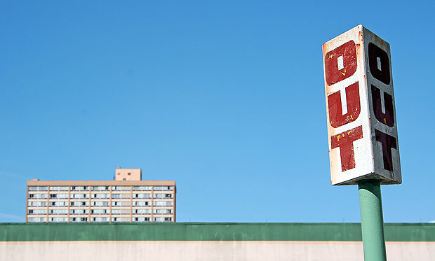

Imagine that your image is divided into 9 equal segments by 2 vertical and 2 horizontal lines. The rule of thirds says that you should position the most important elements in your scene along these lines, or at the points where they intersect.
Doing so will add balance and interest to your photo. Some cameras even offer an option to superimpose a rule of thirds grid over the LCD screen, making it even easier to use.
Notice how the building and horizon are aligned along rule-of-thirds lines.
The rule of thirds is one of the most useful composition techniques in photography. It's an important concept to learn as it can be used in all types of photography to produce images which are more engaging and better balanced.
Of course, rules should never be applied blindly, particularly in art, so you should think of it more as a handy "rule of thumb" rather than one that's set in stone. However, it will produce a pleasing photo more often than not, and is an excellent starting point for any composition.
The rule of thirds involves mentally dividing up your image using 2 horizontal lines and 2 vertical lines, as shown below. You then position the important elements in your scene along those lines, or at the points where they meet.
A rule of thirds grid. Important elements (the shed, and the border between the ground and the trees) are positioned along the lines and at the intersections.
The idea is that an off-centre composition is more pleasing to the eye and looks more natural than one where the subject is placed right in the middle of the frame. It also encourages you to make creative use of negative space, the empty areas around your subject.
When framing a photo, imagine the scene divided up as above. Think about what elements of the photo are most important, and try to position them at or near the lines and intersections of the grid. They don't have to be perfectly lined up as long as they're close.
The horizon and main subject in this photo have been positioned near lines or intersections for maximum impact.
You may need to move around to get the best composition. This forces you to think more carefully about the shot, and is a good habit to get into whether you're using the rule of thirds or not.
To help you out, some cameras have a setting which overlays a rule of thirds grid onto your photo. This removes all guesswork and helps you get your positioning even more accurate.
The rule of thirds is very versatile and can be used on any subject. Below are some example of it being used effectively in different types of shots.
In landscape shots, it's common to position the horizon along the centre of the frame, but this can give the photo a "split in two" feel. Instead, place it along one of the horizontal lines.
Try to include another interesting object, such as the tree in the photo above, and position it according to the rule of thirds. This provides an "anchor", a natural focal point for the scene.
It's a good idea to position people off to one side of the frame. This provides some "breathing space", shows the subject's environment, and stops the photo from looking like a mugshot.
We are naturally drawn to people's eyes. Place them at one of the intersections on the rule of thirds grid to give the shot a clear focal point.
Here the main subject has been placed at one of the intersections, and also along one a vertical line. The twig roughly follows the top horizontal line. The empty space at the bottom left provides balance and prevents the picture from feeling overcrowded.
Vertical subjects such as this lighthouse can split a photo in two, in much the same way as a horizon can do horizontally. To avoid this, position them off-centre in your composition.
When photographing moving subjects, position them as normal, but also pay attention to the direction they're moving. As a general rule you should leave more space in front of them than behind, to show where they're going.
You can easily apply the rule of thirds to existing photos by cropping them. This allows you to reposition the important subjects in your image, moving them into more pleasing positions.
Re-cropping to use the rule of thirds can improve composition.
To help you, software like Photoshop and Lightroom have built-in "crop guide overlays" which include a rule of thirds option. This places a rule of thirds grid on top of your image as you crop it, allowing you to get your positioning spot on.
As with all rules (at least in photography), the rule of thirds doesn't apply in every situation, and sometimes breaking it can result in a much more eye-catching, interesting photo. Experiment and test out different compositions even if they go against any "rules" you've learned.
However, learn to use the rule of thirds effectively before you try to break it - that way you can be sure you're doing so in order to get a better composition, rather than just for the sake of it.
2)BALANCING ELEMENTS
Placing your main subject off-centre, as with the rule of thirds, creates a more interesting photo, but it can leave a void in the scene which can make it feel empty. You should balance the "weight" of your subject by including another object of lesser importance to fill the space.

Here, the visual "weight" of the road sign is balanced by the building on the other side of the shot.
When we look at a photo our eye is naturally drawn along lines. By thinking about how you place lines in your composition, you can affect the way we view the image, pulling us into the picture, towards the subject, or on a journey "through" the scene. There are many different types of line - straight, diagonal, curvy, zigzag, radial etc - and each can be used to enhance our photo's composition.
The road in this photo draws your eye through the scene.
We are surrounded by symmetry and patterns, both natural and man-made., They can make for very eye-catching compositions, particularly in situations where they are not expected. Another great way to use them is to break the symmetry or pattern in some way, introducing tension and a focal point to the scene.
The symmetry of this chapel is broken by the bucket in the bottom right corner.
Before photographing your subject, take time to think about where you will shoot it from. Our viewpoint has a massive impact on the composition of our photo, and as a result it can greatly affect the message that the shot conveys. Rather than just shooting from eye level, consider photographing from high above, down at ground level, from the side, from the back, from a long way away, from very close up, and so on.
The unusual viewpoint chosen here creates an intriguing and slightly abstract photo.
How many times have you taken what you thought would be a great shot, only to find that the final image lacks impact because the subject blends into a busy background? The human eye is excellent at distinguishing between different elements in a scene, whereas a camera has a tendency to flatten the foreground and background, and this can often ruin an otherwise great photo. Thankfully this problem is usually easy to overcome at the time of shooting - look around for a plain and unobtrusive background and compose your shot so that it doesn't distract or detract from the subject.
The plain background in this composition ensures nothing distracts from the subject.
Because photography is a two-dimensional medium, we have to choose our composition carefully to conveys the sense of depth that was present in the actual scene. You can create depth in a photo by including objects in the foreground, middle ground and background. Another useful composition technique is overlapping, where you deliberately partially obscure one object with another. The human eye naturally recognises these layers and mentally separates them out, creating an image with more depth.
Emphasise your scene's depth by including interesting subjects at varying distances from the camera.
The world is full of objects which make perfect natural frames, such as trees, archways and holes. By placing these around the edge of the composition you help to isolate the main subject from the outside world. The result is a more focused image which draws your eye naturally to the main point of interest.
Here, the surrounding hills form a natural frame, and the piece of wood provides a focal point.
Often a photo will lack impact because the main subject is so small it becomes lost among the clutter of its surroundings. By cropping tight around the subject you eliminate the background "noise", ensuring the subject gets the viewer's undivided attention.
Cut out all unnecessary details to keep keep the viewer's attention focused on the subject.
With the dawn of the digital age in photography we no longer have to worry about film processing costs or running out of shots. As a result, experimenting with our photos' composition has become a real possibility; we can fire off tons of shots and delete the unwanted ones later at absolutely no extra cost. Take advantage of this fact and experiment with your composition - you never know whether an idea will work until you try it.
Digital photography allows us to experiment with different compositions until we find the perfect one.
Composition in photography is far from a science, and as a result all of the "rules" above should be taken with a pinch of salt. If they don't work in your scene, ignore them; if you find a great composition that contradicts them, then go ahead and shoot it anyway. But they can often prove to be spot on, and are worth at least considering whenever you are out and about with your camera.
As a general rule, simple images tend to be more appealing than complicated ones. This idea is similar to the previous "fill the frame rule," in that it demands that you get rid of distracting elements in your photo (see how all these rules are related)? To use this compositional rule, simply ask yourself this question: does that element add to my composition? If it doesn't, get rid of it. You can do this by recomposing so that the element is no longer in the frame, zooming in on your subject, using a wider aperture for a shallow depth of field, or simply cropping the image later in post processing.
Patterns appear everywhere, in both man-made settings and in natural ones. If you don't notice patterns all around you, then you're not looking hard enough. Pattern can be very visually compelling because it suggests harmony and rhythm, and things that are harmonious and rhythmic make us feel a sense or order or peace. Pattern can become even more compelling when you break the rhythm - then the eye has a specific focal point to fall upon, followed by a return to that harmonic rhythm.
Perhaps nothing can compete with color as a tool for creating mood in a photograph. Cool colors (blues and greens) can make your viewer feel calm, tranquil or at peace. Reds and yellows can invoke feelings of happiness, excitement and optimism. A sudden spot of bright color on an otherwise monochromatic background can provide a strong focal point. How you use color can dramatically change a viewer's perception of an image. Pay attention to the colors in everyday scenes and use them according to what you want your viewer to feel when looking at your image.
Texture is another way of creating dimension in a photograph. By zooming in on a textured surface - even a flat one - you can make it seem as if your photograph lives in three dimensions. Even a long shot of an object can benefit from texture - what's more visually interesting, a shot of a brand new boat sitting at a squeaky-clean doc, or a shot of an old fishing boat with peeling paint sitting in the port of a century-old fishing village?
S

Moving on to some simpler ideas, the rule of odds is somewhat related to the rule of thirds. The eye tends to be more comfortable with images that contain an odd number of elements rather than an even number. A photograph of three birds on a wire, for example, is probably going to be more appealing than an image shot after that third bird flies away. The reason for this is that the human eye will naturally wander towards the center of a group. If there's empty space there, then that's where the eye will fall. As a photographer, you want your viewer to look at a subject, not at an empty space.

This rule incorporates two very similar ideas: breathing room and implied movement. The leaving space rule probably comes naturally to you, but if you need a way to visualize it think of your frame as a box and your subject as something you're going to be putting inside of a box. To make your subject comfortable, you need to give him a bigger box that allows him some visual freedom and/or freedom of movement. If your subject is looking at something (even something off-camera), make sure there is some "white space" for him to look into. (White space, of course, is not a literal term but a term used to describe the space that surrounds your subject, usually that part of the frame where there isn't anything happening.) Likewise, "implied motion" means that if your subject is in motion you need to give her some space that she can move into.
If your image has diagonals, try composing it using "golden triangles." To do this, divide your image diagonally from corner to corner, then draw a line from one of the other corners until it meets the first line at a 90 degree angle. Now place your photograph's elements so that they fall within the resulting triangles.The golden spiral, as you might guess, is a compositional tool for use with objects that have curving lines rather than straight ones. This spiral is drawn based on that complicated series of rectangles we saw above, but you can actually visualize this based on nature's nautilus shell, which matches the golden spiral shape almost exactly. If that seems a little too convoluted to you, just look for compositions where there is a spiral that leads the eye to a particular point in the image.
Enter "the golden ratio." While the rule of thirds divides your scene into equal thirds, the golden ratio divides your scene a little bit differently, into sections that are roughly 1:1.618. Unless you are a mathematical genius or at least a whiz, you'll probably need to see this visually:
As you can see, instead of being evenly spaced as they are in the rule of thirds, golden ratio lines are concentrated in the center of the frame, with roughly 3/8ths of the frame in the above part, 2/8ths in the middle and 3/8ths at the bottom. This idea has been around for centuries - millennium, really, and can be found in many of the great classic works of art. Of course I have given you a very oversimplified version of this idea. There is also a golden section rectangle, which looks like this and is based on a very complex mathematical formula:
With the idea being that a perfectly composed image should follow the lines in this rectangle.